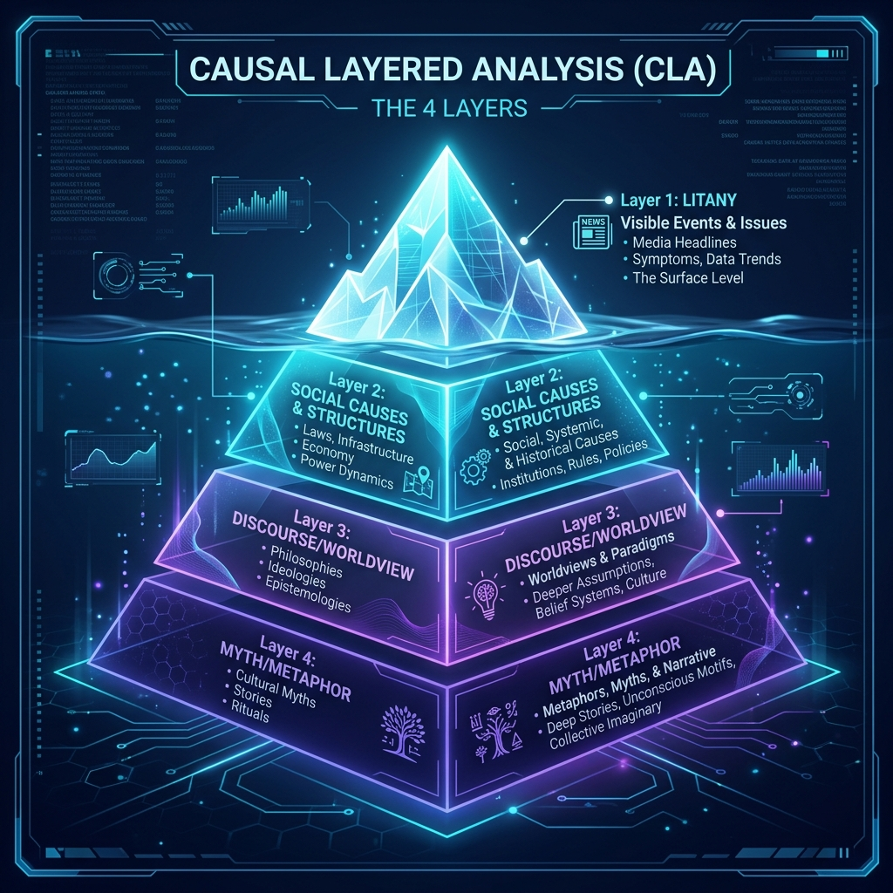

روشی عمیق در آیندهپژوهی برای واسازی و ساختارشکنی مسائل سطحی و نفوذ به ریشههای تمدنی و ناخودآگاه جمعی جهت خلق سناریوهای تحولآفرین.
روش تحلیل لایهای علتها (Causal Layered Analysis) که توسط پروفسور سهیل عنایتالله ابداع شده است، ریشه عمیقی در تفکر **پساساختارگرایی** و بهویژه نظریه **تبارشناسی (Genealogy)** و دیرینهشناسی دانش **میشل فوکو** دارد. عنایتالله این متدولوژی را نه صرفاً به عنوان یک ابزار پیشبینی، بلکه به عنوان روشی برای واسازی (Deconstruction) و ساختارشکنی ادعاهای حقیقتمحور سنتی در سیاستگذاری و آیندهپژوهی طراحی کرده است.
در این رویکرد، پذیرفته میشود که هر حقیقت یا مسئله اجتماعی، در بستر گفتمانهای قدرت شکل گرفته است. با حرکت از لایه اخبار سطحی (لیتانی) به سمت ساختارهای اجتماعی، سپس تحلیل گفتمانهای حاکم و در نهایت کاوش در اسطورهها و ناخودآگاه تمدنی، پدیدهها واسازی میشوند. هدف غایی CLA، توانمندسازی ذینفعان برای فرار از سناریوهای تحمیلی قدرت و خلق **استعارههای بدیل تحولآفرین** برای بازآفرینی حال و آینده است.

مسائل، روندها و آمارهای کمی که روزانه در رسانهها منتشر میشوند. اطلاعات در این سطح پراکنده، اغراقآمیز و بدون پیشزمینه تاریخی تحلیل میشوند. واکنش عمومی معمولاً درماندگی، انفعال یا سرزنش دیگران است. این لایه، حقیقتِ تقلیلیافته به گزارههای ساده و اخبار خام زرد است که گفتمانهای قدرت جهت حواسپرتی یا هدایت افکار عمومی از آن بهرهبرداری میکنند.
بررسی ریشههای ساختاری و سیستمی که لایه لیتانی را شکل میدهند. این سطح تحت تسلط سازمانهای سیاستگذار، دانشگاهها و کارشناسان فنی است. قوانین، ساختارهای اقتصادی، سیاستهای رسمی، نظامهای بوروکراتیک و حلقههای بازخورد سیستماتیک در اینجا واکاوی میشوند؛ اما همچنان محدودیتهای پارادایمی خود را به چالش نمیکشند.
گفتمانهایی که به ساختارها و سیاستهای لایه دوم مشروعیت میبخشند. این لایه نحوه تعریف مسئله را بررسی میکند و نشان میدهد چگونه جهانبینیهای مختلف (نظیر نئولیبرالیسم، پوزیتیویسم، سنتگرایی، محیطزیستگرایی یا فمینیسم) با زبانی خاص، مرزهای حقیقت را تعیین میکنند. در این لایه، قدرت گفتمانی میشل فوکو مورد کاوش قرار میگیرد.
عمیقترین لایه که به روایات داستانی، احساسی، استعارههای کهن و الگوهای تمدنی پنهان میپردازد. این لایه داستانهای غیرعقلانی و ناخودآگاهی است که جهانبینیها را در طول سدهها زنده نگه میدارند. تغییر در این لایه بسیار دشوار است اما تحول پایدار استراتژیک تنها زمانی رخ میدهد که استعارههای جدید خلق شوند.
در اوایل دهه ۲۰۱۰، دفتر آیندهپژوهی نخستوزیری سنگاپور (PMO) برای بازمهندسی سیستمهای شهری از روش CLA بهره برد تا ریشههای فرهنگی بحران انباشت زباله و ازدحام متروها را واسازی کند:
گزارشهای روزانه رسانهها از تاخیر قطارهای سریعالسیر شهری، انباشت کیسههای زباله در آپارتمانها و نارضایتیهای کتبی شهروندان.
تخصیص نیافتن بودجه به واگنهای بیشتر، ظرفیت رو به اتمام لندفیل جزیره زباله و خلأ قوانین تفکیک در محل.
حاکمیت نگاه «سنگاپور به عنوان یک هتل مجلل بینالمللی» که در آن شهروندان مشتریانی طلبکار و دولت خدمتگزار صِرف تعریف میشد.
استعاره پنهان «سفیدپوستهای مقیم موقت هتل» که هیچ تعلق عاطفی و مسئولیتی نسبت به پاکیزگی و نگهداری خانه خود احساس نمیکردند.
استعاره و جهانبینی جدید تحولآفرین: دولت سنگاپور با بازتعریف استعاره ملی به «سنگاپور به مثابه یک خانه باغ خانوادگی مشترک» و گفتمان «پایداری همکارانه»، حس مالکیت و مسئولیت را در شهروندان زنده کرد که منجر به تغییر داوطلبانه الگوهای مصرف و حل کامل بنبستهای سیستمی گردید.
مسائل و چالشهای کلان را در بستههای طبقهبندیشده کاوش کنید تا ریشه گفتمانها و اسطورههای هر حوزه شفاف شود.
یک مسئله را انتخاب کنید یا مسئله اختصاصی خود را بنویسید تا آن را به چهار لایه هرم عنایتالله بشکنید و سناریوی جایگزین خلق کنید.
محتوا...
محتوا...
محتوا...
محتوا...
انتخاب مسئله و جمعآوری دادههای لایه لیتانی (اخبار، آمار، رویدادها).
تحلیل علل ساختاری: سیاستها، نهادها، مشوقهای اقتصادی و فنی.
واسازی گفتمانها: جهانبینیها، پارادایمها و روایتهای مشروعیتبخش.
کاوش اسطوره و استعاره: ناخودآگاه جمعی و خلق استعارههای تحولآفرین.